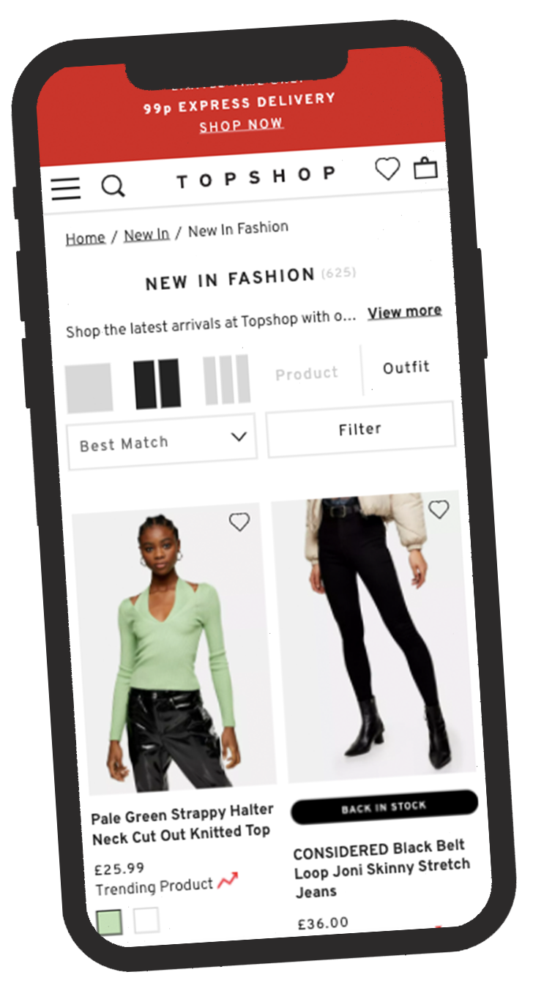

EXPERIENCE

PROJECT CO-ORDINATOR AT TOPSHOP|TOPMAN
November 2019 - February 2021
- Responsible for coordinating brand facing projects that drive the Topshop Topman
Digital platforms (responsive web and app).
- Consider user experience with every project, working closely with IT, design, production,
UXUI and customer insight teams. Provided with test builds and links to QA all new
functionality, providing feedback, raising any issues and signing off before it’s released
to site.
-
Work in agile methodology: JIRA backlog and sprint planning, creating tickets for
projects or site improvements in User Story format.
-
Responsible for all app release QA and signing off new builds before they are released
to the app stores. Also heavily involved in the prioritisation process of the backlog.
-
Plan, brief and QA new A|B tests to site, measuring KPIs with the ultimate aim of
increasing conversion.
-
Complete regular reporting and analysis of the site funnel, sharing any key updates with
the team.
-
The go-to team in digital for all new site requests or for raising any issues found. Scope
the issues and prioritise against the backlog.
-
Maintain excellent relationships with stakeholders across the Topshop Topman Digital
team, IT and brand representatives from the wider Arcadia Group.
KEY ACHIEVEMENTS/PROJECTS:
-
App owner within TSTM and key involvement within the app stream of the wider Arcadia
group.
-
Introduced a new process for raising and monitoring bugs that other Arcadia brands
have followed.
-
Other key project examples include: A Whole Site Re-platform, A|B tests, Checkout
Optimisation, Digital delivery pass/renewals.
TOPSHOP|TOPMAN - DIGITAL PROJECTS ASSISTANT
September 2018 - November 2019
-
Raising SEV 1 live support issues that affect the brands digital platforms with IT for investigation.
-
Being a key liaison between IT and the Digital team, working pro-actively to solve live production issues and implementing bug fixes.
-
Performing QA and UAT on all new functionality and bug fixes, this includes ongoing QA of TSTM’s apps and other upcoming digital projects.
-
Producing weekly reports to share with stakeholders to give an overview of the status of bugs and issues.